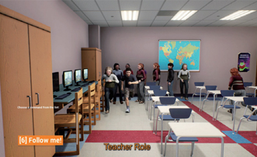
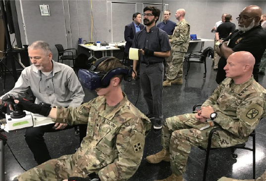
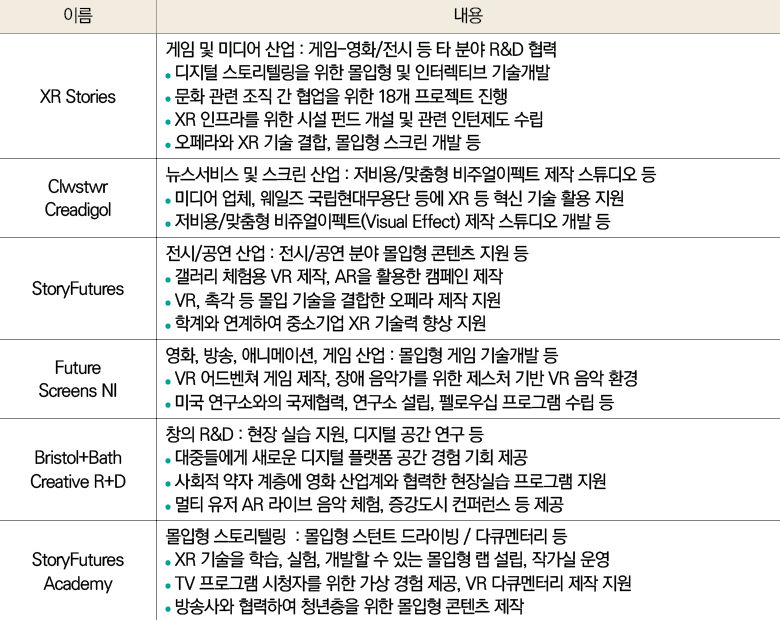

글로벌 XR 정책 동향 및 시사점
Global XR policies and implications
한상열 선임연구원 syhan17@spri.kr · 방문영 인턴연구원 hihitto@spri.kr
비대면 수요 증가에 대응한 온라인 가상공간 활용 중요성이 높아지면서 XR 기술에 대한 관심은 지속적으로 커지고 있다.
최근 미국, 유럽, 중국, 일본 등 주요국과 국내에서 활발히 진행 중인 XR 정책 지원 활동들을 알아보고,
XR 산업 발전 및 국내 산업·사회적 활용 확산을 위한 시사점을 제공하고자 한다.
배경
코로나19로 인한 비대면 수요와 이에 대응한 온라인 가상공간 중요성이 커지면서 이를 활용하기 위한 XR
1
기술에 대한 관심이 높아지고 있다.
최근 영국 경제지인 이코노미스트(Economist)는 가상·현실이 융합된 ‘초(meta)세계(verse)’를 의미하는 메타버스(Metavers) 시대의 도래와
이를 실현하기 위한 XR 기술의 확산을 전망했다. 비대면 시대를 맞아 일, 여가, 소통 등 오프라인 활동들이 가상공간으로 옮겨가고 있고,
세컨드라이프(Second life), 마인크래프트(Minecraft), 제페토(Zepeto) 등 게임 및 소셜 활동이 주를 이루던 가상공간에서 실제 회의 등 업무나
행사·전시 등 상업적 활동들이 더해지고 있다. 가상과 현실을 넘나드는 메타버스가 확산되면 그 속에서 다양한 사회, 경제적 가치들이 창출될 것으로 기대된다.
1. 인간의 오감 자극을 통해 정보를 제공하여 실제와 유사한 체험을 가능하게 하는 실감기술은 실감기술은 가상현실(Virtual Reality : VR), 증강현실(Augmented Reality : AR), 혼합현실(Mixed Reality : MR), 그리고 홀로그램(Hologram : HR)과 미래에 나타날 신기술을 포함하여 XR이라고 통칭하고 있다.
페이스북(Facebook), 애플(Apple), 마이크로소프트(Microsoft) 등 글로벌 대기업들은 이러한 XR의 잠재력과 산업적·사회적 파급력을 산업 초기부터 주목해 왔고
XR 시장 선점을 위한 생태계 조성 노력을 지속적으로 확대해 왔다. 미국, 유럽, 중국, 일본 등 주요국들도 XR 산업에 대한 전략 수립을 통해 중장기적인 관점에서
기술개발과 XR 활용 확산을 활발히 지원하고 있다.
XR 대중화를 위해서는 XR 기기의 무게 및 성능, 사용성, 콘텐츠, 네트워크 등 해결해야 하는 문제들이 있다.
하지만, 중장기적인 기술개발 투자와 활용 효과 가시화에 따라 XR은 전 산업에 폭넓게 활용될 것으로 예측된다.
2
본고에서는 미국, 유럽, 중국, 일본 등 해외 주요국의 XR 정책과 국내 정책을 살펴보고, 전 산업으로의 XR 활용 확산과 산업 경쟁력 확보를 지원하기 위한 시사점을
제공하고자 한다.
2. 글로벌 컨설팅사인 엑센추어(Accenture)는 헬스케어, 제조·건설, 교육훈련, 유통소비 등 全산업 작업시간의 약 21%에 XR이 활용되어 생산성을 높일 것으로
추정하고 있다(Accenture, “Waking up to a new reality”, 2019.5.).
| 1 | 인간의 오감 자극을 통해 정보를 제공하여 실제와 유사한 체험을 가능하게 하는 실감기술은 가상현실(Virtual Reality : VR), 증강현실(Augmented Reality : AR), 혼합현실(Mixed Reality : MR), 그리고 홀로그램(Hologram : HR)과 미래에 나타날 신기술을 포함하여 XR이라고 통칭하고 있다. |
| 2 | 글로벌 컨설팅사인 엑센추어(Accenture)는 헬스케어, 제조·건설, 교육훈련, 유통소비 등 全산업 작업시간의 약 21%에 XR이 활용되어 생산성을 높일 것으로 추정하고 있다(Accenture, “Waking up to a new reality”, 2019.5.). |
주요국 XR 정책
① 미국 : 국방부 등 공공 분야의 XR 정책 지원성과를 민간으로 이전
미국은 ICT R&D 프로그램인 NITRD(Networking and Information Technology Research and Development)3 의 일환으로 XR 기술개발을 지원해 왔다. 1990년대에는 수술 및 치료 보조,
광학 현미경 기술 시각화에 CG, VR 기술 활용을 지원하였으며, 2000년대에는 산업, 교육, 재난 등 다양한 공공 분야로 VR 활용을 확대하였다. 2017년부터 XR은 컴퓨터 기반 인간
상호작용, 커뮤니케이션, 증강(CHuman, Computing-Enabled Human Interaction, Communication and Augmentation) 분야로 발전되었고 AR 기술 개발, XR과 인공지능(AI) 융합을
지원하였다.
미국 국방부, 국토안보부, 교육부 등을 중심으로 국가안보 및 사회·안전 분야의 XR 기반 교육·훈련 프로그램 개발 지원도 지속적으로 이루어지고 있다. 국토안보부는 응급상황 발생 대응을 위한
가상훈련플랫폼 EDGE(Enhanced Dynamic Geo-Social Environment)를 개발하여 사용 중이다. 교육부는 중장기 교육 기술 정책 계획인 ‘국가교육기술계획 2017(The National Education Technology
Plan 2017)’에 학생 참여도 및 자율성 제고를 위한 VR·AR 기술 활용 방안을 포함하였다.
미국 국방부는 육군 훈련 분야에 XR 기술을 활용하고 있다. 현재 일부 부대를 대상으로 시범 운영 중인 합성훈련환경(Synthetic Training Environment, STE)은 전투기, 탱크 등 다양한 군수물품 변화에 맞추어 실시간(Live), 가상(Virtual), 건설적(Constructive) 훈련을 지원한다.
2021년 4분기에 초기운용역량(initial operating capability) 요건을 갖추고, 2023년에 완전운용역량(full operating capability) 확보를 예상하고 있다.4
[그림 1] 미국 주요 기관 XR 지원 프로그램

EDGE

STE
※ 출처 : 미 국토안보부, 미 육군 홈페이지
| 3 | NITRD 프로그램은 미국 연방정부의 각 부처·기관이 담당하는 ICT 연구개발 활동을 조정하며 연간 50억 달러의 투자 규모로 진행된다. |
| 4 | U.S. Army(2019.10.8.), “Army testing synthetic training environment platforms” |
② 유럽/영국 : 장기연구, 콘텐츠 육성과 연계하여 XR 개발 및 활용 지원
유럽은 범유럽(EU) 차원의 중장기 XR 기술 개발을 지속적으로 추진하고 있다.
MR 저작 프로세스 관련 ‘Authoring Mixed REality’, ‘가상현실 R&D를 포함한 범유럽 7차 기술연구개발 종합계획(EU 7th Framework Program)’,
‘호라이즌 2020(Horizon 2020)’등 범유럽 연구개발 계획 발표를 통해 XR 등 미래 ICT 기술력 확보에 집중하고 있다. 영국, 독일, 스페인 등 개별 국가에서도 XR 관련 연구 프로젝트가 활발히 진행되고 있다.
특히 영국은 XR 활용 산업 발전에 다양한 정책적 노력을 기울이고 있다.
영국은 4대 디지털 핵심 기술로 XR을 지정하고, 지역 클러스터 지원 등을 통해 실감기술과 他 산업과의 시너지 창출을 통한 XR 산업 발전을 추진하고 있다.
2017년 ‘산업전략 백서’, 2018년 ‘창의산업 섹터딜(Creative Industries Sector deal)’ 발표 등을 통해 미래 산업기술 중 하나로 XR을 채택하였다.
또한, 2018년 Innovate UK5 는 “The Immersive Economy in the UK” 보고서를 통해 XR 기술을 활용하여
산업, 사회, 문화적 가치를 창출하는 실감경제(Immersive Economy) 개념을 제시하면서 범용기술로서 XR의 역할과 파급력에 주목할 필요성을 강조하였다.
2018년 영국 정부의 산업전략챌린지펀드(Industrial Strategy Challenge Fund)와 예술인문연구 지원회(Arts and Humanites Research Council) 지원을 받아 시작한
창의산업 클러스터 프로그램(The Creative Industries Clusters Programme)은 타 산업 분야와 XR 기술 융합 발전 촉진을 지원하고 있다([표 1] 참조).
본 프로그램은 영국이 강점을 가지고 있는 소프트웨어·컴퓨터 서비스, 디자인, 출판, TV·라디오, 음악, 비디오·영화·광고, 건축, 패션 디자인 등 다양한 분야 기업 및 유관기관들이 참여하여
연구자와 기업 간 협업 및 지식 창출·교환을 목표로 한다. 현재 9개 창의산업 클러스터 프로그램이 운영되고 있으며, 게임·영화·예술 등 다양한 분야 프로그램에 관련 XR 기술 R&D도 포함되어 있다.
[표 1] 영국 창의산업 클러스터 VR/AR 관련 프로그램

주) InGame, Business of Fashion, Textiles & Technology, Future Fashion Factory 등 3개 클러스터 제외
※ 출처 : UKRI, Creative Industries Cluster Programme, The Story So Far, 2020.02.
| 5 | Innovate UK는 독립 공공기관인 UKRI의 소속기관으로 기업 혁신활동을 지원하기 위한 프로그램을 운영 |
③ 중국 : 신산업 창출을 위한 지방 정부 중심의 XR 산업 육성
중국은 중앙 정부에서 전략형 신흥산업 육성 차원에서 XR 활용 확대 정책을 펼치고 있으며, 지방 정부별로 지역 맞춤형 XR 산업 육성 정책을 추진하고 있다.
2016년부터 ‘국가 전략형 발전계획’, ‘정보소비 확대에 대한 지도의견’, ‘VR 산업 발전 가속화 지도의견’, ‘문화·과학 기술 융합 지도의견’ 등
XR 산업 발전 지원을 위한 중앙 정부의 중장기 정책이 연이어 발표되었다.
이에 따라, 저장, 허베이성, 산둥 등 주요 지방 정부에서는 XR 관련 산업기지 구축 등 세부 실행 정책을 추진하고 있다.
2018년 기준으로 중국 동부지역(베이징, 난창, 허베이 등)에 15개의 VR·AR 산업단지가 조성되어 XR 체험부터 창업 생태계 조성까지 XR 산업 발전을 위한 폭넓은 지원이 이루어지고 있다.
또한, 지방 정부들은 디지털 경제 발전, 교육 혁신, 5G, 빅데이터 등 기술발전 전략에 XR 활용 내용을 반영하고 있다([표 2] 참조).
[표 2] 2019~2020년 중국 지방 정부 XR 산업 관련 주요 정책 예시

※ 출처 : Chinabaogao, 2020年全国及各省市虚拟现实 行业相关政策梳理, 2020.8.21.
④ 일본 : Society 5.0 실현을 앞당기기 위한 XR 기술개발 및 활용 기반 마련
일본 정부는 4차 산업혁명 기술 기반의 경제발전과 사회문제 해결을 위한 ‘Society 5.0’ 전략에서 AI, 사물인터넷과 함께 VR·AR 기술을 미래 사회를 위한 핵심 기술에 포함하였다.
내각부의 ‘과학기술혁신종합전략’, 미래투자전략회의의 ‘미래투자전략’, 총무성의 ‘2030년 미래를 맞는 기술전략’에서도 미래 사회를 위한 VR·AR 기술의 중요성을 강조하고 있다.
문부과학성은 학계와 연구계를 대상으로 VR·AR 연구개발비를 지원하고, 경제산업성은 VR·AR 콘텐츠 제작 기업 지원 및 기술 활용 가이드라인을 제시했다. 경제산업성 훗카이도 경제산업국에서는
국외 XR 시장 네트워크 구축 정책을 발표했다.
2020년 4월 국토교통성은 일본 국토의 디지털트윈(Digital Twin)6 을 목표로 하는 ‘국토 교통 데이터 플랫폼 1.0’을 공개하였다([표 3] 참조).
국토 교통 데이터 플랫폼은 국토, 경제활동, 자연현상과 연계된 데이터를 연계해 가상공간에서 관리, 물류, 재난대비, 건축 등 다양한 상황을 시뮬레이션하는 것이 목적이다.
건축물이나 인프라, 관광시설 등 3차원 데이터에 역사와 이벤트 정보를 부가하고 XR 시각화를 활용하여 몰입감이 높은 관광체험 제공 등 다양한 서비스 제공도 가능하다.
[표 3] 일본 국토 교통 데이터 플랫폼 기능

※ 출처 : 국토교통성, 国土交通データプラットフォーム（仮称）整備計画, 2020.4.
2020년 5월 경제산업성이 발표한 ‘산업기술비전2020’은 코로나19 위기로 인해 가상공간과 현실공간 모두 외부적 충격에 신속히 대응하는 유연한 경제·사회 시스템으로의 전환과
‘Society 5.0’ 실현을 앞당길 것을 강조하였다. 이를 위한 중요 기술군7 에 사물인터넷,
인간확장(Human Augmentation)8 을 뒷받침하는 로보틱스(Robotics), 센싱(Sensing), XR,
기계번역 등 디지털 기술을 포함하였다. XR의 경우, 향후 가상공간을 통한 원격, 비접촉, 비대면 상태의 가치 제공이 핵심이 되면서 이를 지원하는 텔레프레전스(Telepresence)나
원격조작(Teleexistence), 인간 오감의 가상 재현 기술이 더욱 중요해질 것으로 전망하였다.
| 6 | 실제 장비나 공간을 가상세계에 쌍둥이처럼 똑같이 구현하는 기술로서, 장비나 특정 공간에 발생할 수 있는 문제를 시뮬레이션하여 결과를 미리 예측 가능 |
| 7 | 사물인터넷, 인간 확장 관련 디지털 기술, 바이오 기술, 재료(Material) 기술, 에너지·환경 기술 |
| 8 | 인간과 각종 IT 기술을 접목해 신체능력, 인지능력, 지각능력 등 인간의 기본 능력을 확장 |
⑤ 한국 : XR 산업 발전 지원 및 공공·산업 분야로의 XR 융합 추진
한국은 2016년 발표한 ‘9대 국가전략’에서 VR 기술개발 및 산업육성에 대한 정책지원을 본격화하였다.
이후 범부처 차원에서 ‘5G+ 전략실행계획’, ‘실감콘텐츠 산업 육성 범정부 5개년 추진계획’, ‘콘텐츠산업 활성화 실행계획’, ‘가상·증강현실 분야 선제적 규제 혁신 로드맵’
등을 통해 실감콘텐츠 산업 중심의 기술개발, 펀드지원, 인프라 확충, 규제 개선 등 지원을 확대해 왔다([표 4] 참조).
2020년 7월 발표된 ‘디지털 뉴딜(Digital New Deal)’ 정책에도 민간 시장 수요창출 기반 마련을 위한 실감형 콘텐츠 제작 및 융합형 서비스 개발,
신산업 기반 마련 및 안전한 국토·시설관리를 위해 도로·지하공간·항만 대상 디지털 트윈 구축 등 XR 활용 서비스 확산 및 활용 기반 마련 계획을 포함하였다.
2020년 12월에는 기존의 콘텐츠산업 육성 정책을 경제산업 전 영역의 XR 수요를 반영한 XR 기반 “가상융합경제 발전 전략”이 발표되었다.
XR을 활용해 경제활동(일·여가·소통) 공간이 현실에서 가상융합공간까지 확장되어 새로운 경험과 경제적 가치를 창출하는 개념으로 가상융합경제를 정의하였다.
‘한국판 뉴딜’의 성공적 이행을 촉진하는 기폭제로서 가상융합경제의 중요성을 주목하고 민간주도의 가상융합경제 발전 기반을 조성하는 방향으로 본 정책을 추진할 예정이다.
[표 4] 국내 XR 관련 주요 정책

※ 출처 : SPRi Analysis
시사점
미국, 유럽, 영국, 중국, 일본 등 주요국들은 미래를 이끌 핵심 디지털 기술로서 XR을 지정하고 중장기적인 기술개발 투자와 국방, 교육, 문화 등 다양한 공공·산업 분야의
XR 융합을 지원하고 있다. 국내도 신산업으로서 XR 기술 투자와 정책적 지원을 지속적으로 확대해 왔으며, 최근 ‘가상융합경제 발전 전략’ 발표를 통해 콘텐츠 산업 육성 정책을
국가 차원의 경제전략 정책으로 격상하였다. 앞으로 XR 융합의 폭넓은 확산을 촉진하기 위해서는 기존 정책과의 조화, 지역별 정책사업 확대, 메타버스 시대에 대응한 정책 고도화가
필요하다.
첫 번째로, 전 부처와 각 지자체는 현재 추진 중인 정책사업에 XR 활용 비중을 높여야 한다.
중국은 중앙 정부 정책에 따라 각 지방 정부들이 지역별 디지털 경제 발전, 교육 혁신, 5G, 인공지능, 빅데이터 전략에 XR을 반영하고 있다.
국내도 기존 디지털 인프라 지원 정책, 제조, 교육, 의료, 유통 등 산업 발전 지원 정책, 그리고 현재 중점 추진 중인 디지털 뉴딜, 한국판 뉴딜 정책 실행계획에 XR 활용
비중을 높일 필요가 있다. 이를 통해 기존 정책사업의 효과성을 높이고 지속적인 활용 사례 확보 및 재확산이 가능해질 것이다.
두 번째로, XR 확산을 위한 지역별 정책사업 강화가 필요하다.
중국 지방 정부의 XR 관련 산업 단지 정책, 영국의 창의산업 클러스터 프로그램처럼 국내 지역별 특화 산업 및 인력 육성 정책과 맞물려 XR 활용을 통한 실질적인 사업화 지원
및 교육, 기업 유치 등 직접적 성과 창출을 위한 지역별 XR 활용 실행 계획이 마련되어야 한다. 영국은 자국의 강점인 문화 산업에서 XR 활용을 통한 부가가치 창출에 집중하며
XR 활용 강국을 목표하고 있다. 우리도 제조, 유통, 문화 등 지역별 강점을 기반으로 XR 활용 확산 및 지역 혁신을 적극적으로 추진해야 한다. 일본의 ‘국토 교통 데이터 플랫폼
1.0’처럼 지역 산업에서 XR 활용을 연계할 수 있는 공통 플랫폼 구축 사업을 확대할 필요도 있다.
세 번째로, 메타버스 시대에 대응한 중장기적 정책 고도화가 필요하다.
장기적으로 메타버스 가상공간은 우리의 일상, 여가, 업무 활동이 이루어지는 새로운 플랫폼이 될 것으로 전망되고 있다.
이에 대응하여 기존 오프라인 중심 관점으로 이루어졌던 활동들을 가상공간으로 확장하는 방안에 대한 선제적 고민과 투자가 필요하다.
미국과 유럽이 XR 초기부터 공공 부문을 중심으로 연구개발을 지원해 왔던 것처럼, 우리도 일부 공공 분야부터 메타버스 연계를 시도하고 XR 기반 원격 소통/협업 기술개발을
지원할 필요가 있다. 우선 정책 행사·전시 등 홍보 활동, 협업 회의 등을 가상공간에서 진행해볼 수 있을 것이다. 우리의 삶과 일의 터전이 가상공간으로 확장된다면,
코로나19 등 외부 충격을 줄이면서 경제·사회 활동의 자유도와 효율성은 더욱 높아질 수 있을 것으로 기대된다.
참고문헌진
1. 이승환, 남현숙, 김항규(2020.4.), “5G시대, 실감산업 육성 방안 연구” SPRi
2. 일본 국토교통성(2020.4.), “国土交通データプラットフォーム（仮称）整備計画”
3. 일본 경제산업성(2020.5.), “産業技術ビジョン2020”
4. 한국산업기술진흥원(2019.10.), “유럽 VR 및 AR 산업동향”
5. 한국지능정보사회진흥원(2020.3.30.), “이머징 테크 글로벌 동향 및 공공서비스”
6. Accenture(2019.5.), “Waking up to a new reality”
7. Chinabaogao(2020.8.21.), “2020年全国及各省市虚拟现实 行业相关政策梳理”
8. Office of Educational Technology(2017), “Reimagining the Role of Technology in Education”
9. The Economist(2020.10.), “The Metaverse is coming”
10. UKRI(2020.2.), “Creative Industries Cluster Programme, The Story So Far”
11. U.S. Army(2019.10.8.), “Army testing synthetic training environment platforms”
2. 일본 국토교통성(2020.4.), “国土交通データプラットフォーム（仮称）整備計画”
3. 일본 경제산업성(2020.5.), “産業技術ビジョン2020”
4. 한국산업기술진흥원(2019.10.), “유럽 VR 및 AR 산업동향”
5. 한국지능정보사회진흥원(2020.3.30.), “이머징 테크 글로벌 동향 및 공공서비스”
6. Accenture(2019.5.), “Waking up to a new reality”
7. Chinabaogao(2020.8.21.), “2020年全国及各省市虚拟现实 行业相关政策梳理”
8. Office of Educational Technology(2017), “Reimagining the Role of Technology in Education”
9. The Economist(2020.10.), “The Metaverse is coming”
10. UKRI(2020.2.), “Creative Industries Cluster Programme, The Story So Far”
11. U.S. Army(2019.10.8.), “Army testing synthetic training environment platforms”
본 내용은 2020년도 정부(과학기술정보통신부)의 재원으로 정보통신기획평가원의 지원을 받아 수행함
(과제번호 11, 실감경제의 경제사회적 파급효과 분석 및 활성화 방안 연구)
(과제번호 11, 실감경제의 경제사회적 파급효과 분석 및 활성화 방안 연구)
| 1 | 인간의 오감 자극을 통해 정보를 제공하여 실제와 유사한 체험을 가능하게 하는 실감기술은 가상현실(Virtual Reality : VR), 증강현실(Augmented Reality : AR), 혼합현실(Mixed Reality : MR), 그리고 홀로그램(Hologram : HR)과 미래에 나타날 신기술을 포함하여 XR이라고 통칭하고 있다. |
| 2 | 글로벌 컨설팅사인 엑센추어(Accenture)는 헬스케어, 제조·건설, 교육훈련, 유통소비 등 全산업 작업시간의 약 21%에 XR이 활용되어 생산성을 높일 것으로 추정하고 있다(Accenture, “Waking up to a new reality”, 2019.5.). |
산길을 등지며 시가지로 내려왔었다.
열쇠고리를 산길에 버렸었지만, 마치 지니고 있는 것 같은 느낌이 들어서 호주머니 속으로 손을 넣었다.
고개를 들어 보니, 머리 위로
희미한 햇빛이 비치고 있었다.
산길 위에 서서, 빗속의 먼 어딘가를 하염없이 바라보는 듯한 암울한 기분에서 헤어날 수 없었다.
산길 위에 서서, 빗속의 먼 어딘가를 하염없이 바라보는 듯한 암울한 기분에서 헤어날 수 없었다.
dsadffafdgagads

시사점
①ㄴㅁㄴㅇㅁㄴㅇㅁㄴ